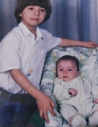
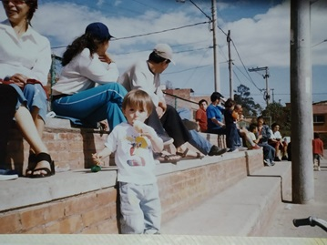
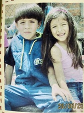
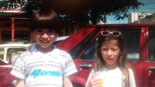
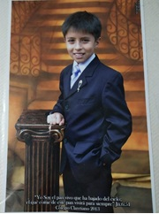

Mi nacimiento - 21/julio/2003
Cuando llegue a este mundo le di mucha alegría a mi familia, y en ese momento nos cambiamos de casa, donde teníamos un cuarto con muchos juguetes.
Iniciando en el colegio - febrero/2009
Mi aprendizaje empezó desde antes de entrar al colegio, porque mi mama me enseño los números, los colores, a leer, entre otras cosas, y cuando llegue al colegio se me facilito y siempre obtuve buenos resultados.
Mi niñes - De 6 a 9 años
Estuvo acompañada por mis padres, mi hermano mayor y mi hermana menor, también estuvo acompañado por los primos, con los que jugaba y realizábamos paseos, siempre se me inculco el estudio, la responsabilidad y respeto, Cambie de look, me quite el honguito, empecé a tener amigos, mostré ser muy inteligente, me gustaba ir al colegio, hacia mis tareas, en esta época mis padres trabajaron y demostré mucha responsabilidad estando solo.
 Mi PreAdolencencia - De 10 a 13 años
Fue muy tranquila, reino siempre la responsabilidad, empecé a tener más amistades. Siempre compartí con mi familia, estando juntos en paseos, reuniones, cine, parques, me gustaba el deporte fisico, juegos de campo, luego aprendí a jugar el deporte ciencia ajedrez, demostrando gran aptitud a partir de los 10 años.Demostré que era muy malgeniado e intolerante, reaccionaba muy violento, no me aguantaba nada.
Mi Adolecencia - De 13 a 17 años
En esta epoca empece a ver el mundo de una forma distinta, deje de ser tan malgeniado y me controlaba más. Empece a colaborar más en la casa, a ser ordenado con mis cosas, descubrí nuevos intereses como los hobies que practico, entre ellos está el baloncesto y el ajedrez. Me volvi más sociable, conocí diferentes lugares muy interesantes, empecé a ver temas relacionados con la programación y me volví más responsable.